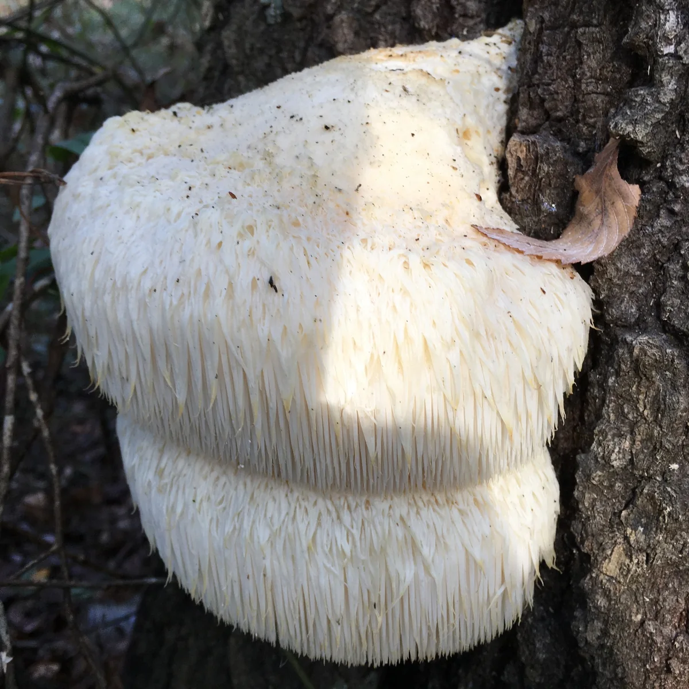
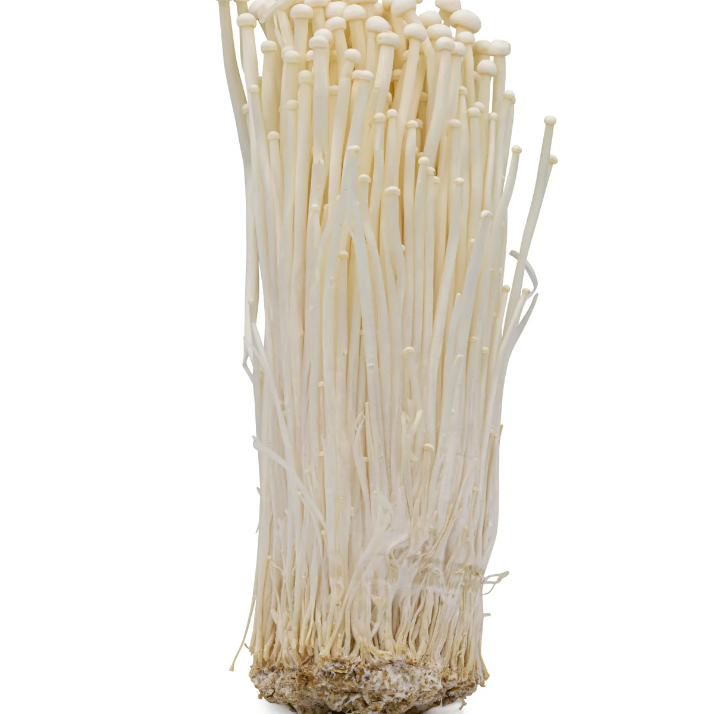
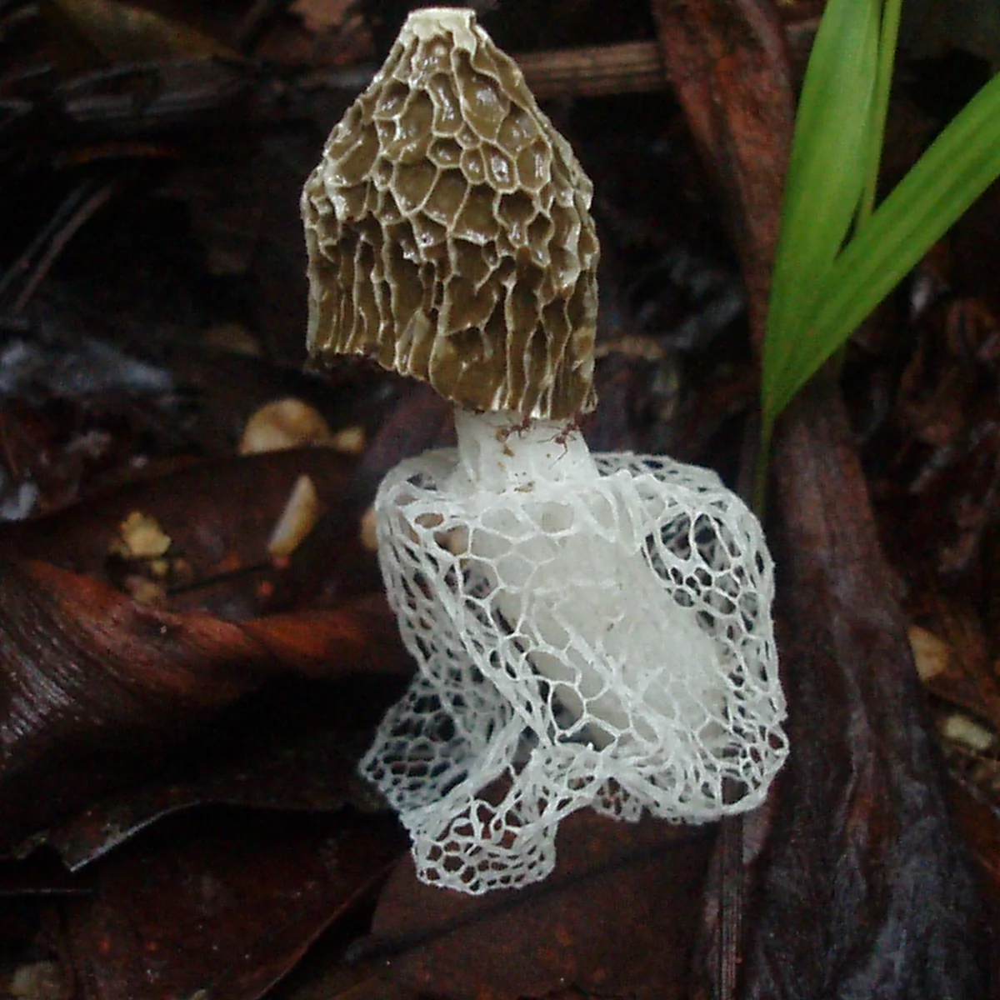
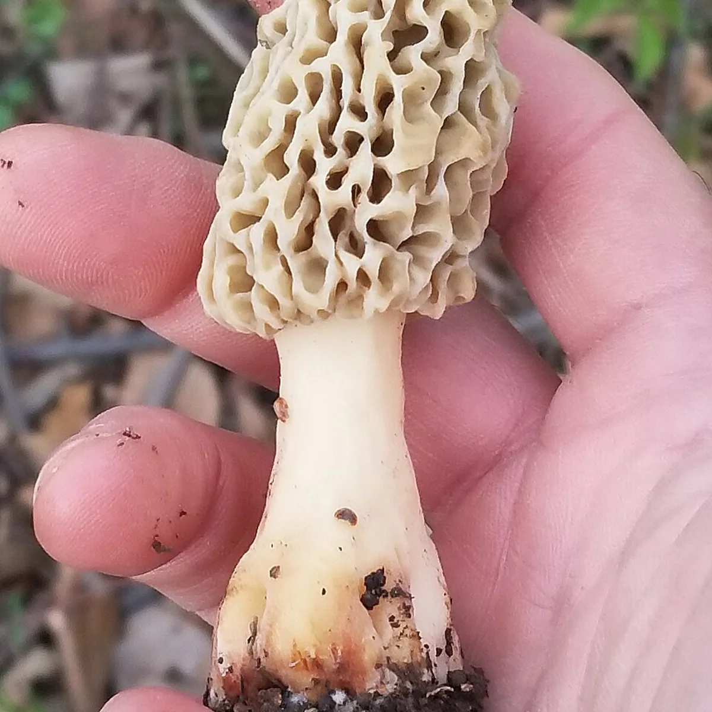

菌菇精华
一杯汇集多样菌物营养
JUNHENG PLAN · 餐前营养管理
23种菌菇精华 × 优质蛋白
× 复合维生素
每餐前一杯，让营养先到一步。把多样营养融入每一个认真对待三餐的日常。
特殊膳食食品 · 运动营养食品
一杯汇集多样菌物营养
每 100 g 含蛋白质 40 g 以上*
B1、B2、B6、叶酸、生物素、B12
TRIPLE NUTRITION
不是模糊地讲“有营养”，而是把一杯里的组成讲清楚。
从猴头菇、金针菇到竹荪、羊肚菌，一杯汇集多样菌物营养。
大豆分离蛋白 × 浓缩牛奶蛋白（含脱脂乳粉）
植物蛋白与动物蛋白搭配，氨基酸互补，为日常膳食补充优质蛋白。
* 数据依据品牌提供素材，具体以产品包装及正式检测资料为准。
FORMULA STRENGTH
研发机构｜北京千菌方菌物科学研究院
国医大师
国医大师
国医大师
国医大师、中国工程院院士
国医大师
国医大师、中国工程院院士
* 据品牌提供资料，仅作组方背景展示，不构成专家代言或产品功效背书；组方信息以正式产品资料为准。
BRAND STORY
让菌菇回到日常一餐，也让“餐前伴侣”有了更自然的饮食结构背景。2023 年 6 月，中国保健协会菌物产业分会主办相关科普公益行动，北京千菌方菌物科学研究院为联合承办方之一。
MEET THE MUSHROOMS

菌菇多糖｜日常饮食中的特色菌菇食材

膳食纤维｜常见餐桌菌菇食材

菌中皇后｜以独特网状菌裙被人们认识

多种氨基酸｜独特蜂窝状菌盖
原料知识不等于产品功效承诺。图片来源于 Wikimedia Commons，作者与授权信息见完整网站菌菇知识板块。
FIVE-STEP PROCESS
围绕真菌多糖肽、麦角硫因及菌菇活性营养的保留与释放，层层推进，服务日常营养补充。
CELL WALL BREAKING
DIRECTED ENZYMOLYSIS
MOLECULAR FILTRATION
LOW-TEMP CONCENTRATION
FORMULATION
工艺名称依据品牌提供素材重新整理，具体工艺参数以正式产品资料为准。
PRE-MEAL RITUAL
饮用方式依据品牌提供的食用说明；请结合个人饮食情况合理安排。
RESEARCH & IDENTITY
研究情况与结论以正式报告为准，不将研究经历解释为疗效承诺。
不是药品，不能代替药物。体重管理需要结合合理饮食、适量运动与良好作息，个体情况不同，请根据自身需求选择。